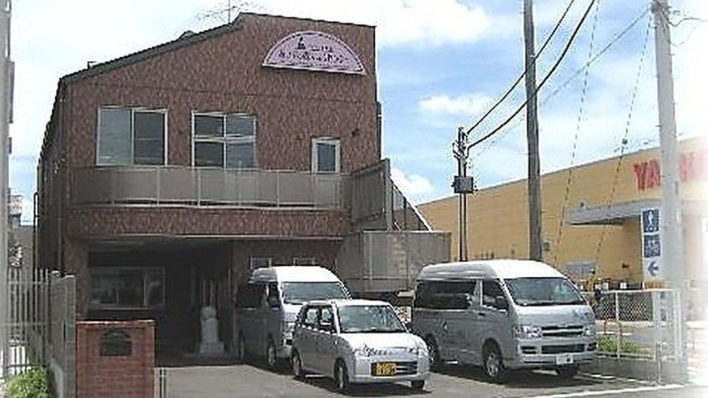
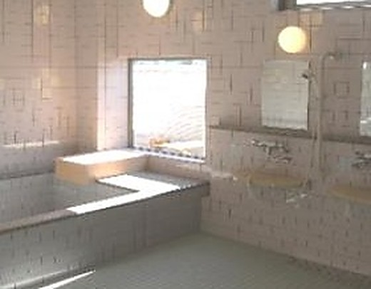
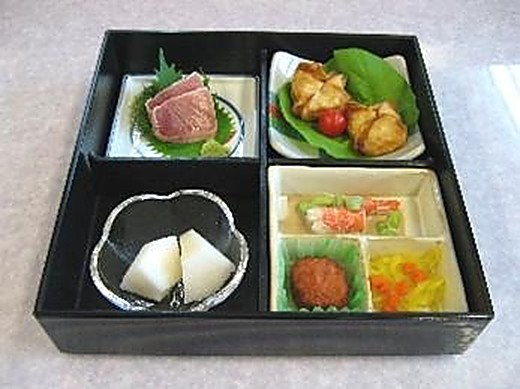
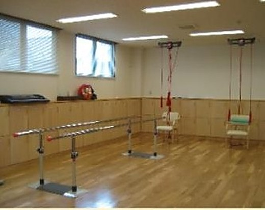
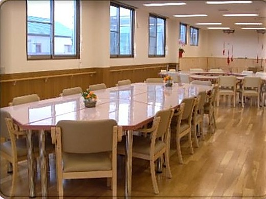
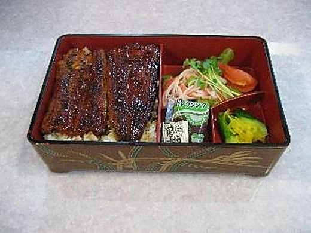
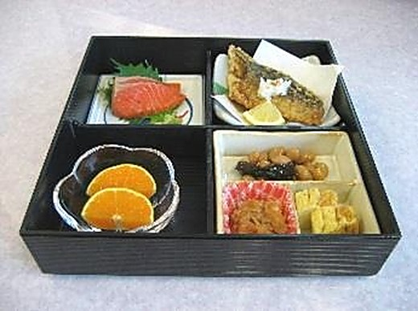

埼玉県ふじみ野市駒林元町
お風呂とごはんのある一日を
2006年の開設から20年目のデイサービスです。1日20名の定員で、朝はご自宅までお迎えにあがり、夕方にお送りします。
月曜〜金曜（祝日を除く） 8:30〜17:30見学は随時受付けています

ふじみ野市・富士見市・三芳町・川越市・志木市へ送迎にお伺いします
Service
できること
介護保険の通所介護と、ふじみ野市の総合事業（通所型サービスA）の両方に対応しています。
出典: 厚生労働省「介護サービス情報公表システム」公表内容／事業所パンフレット（令和6年6月改定版）／重要事項に関する資料
A Day
一日の流れ
通所介護をご利用の日の、朝のお迎えから夕方のお送りまでです。
8:30
ご自宅まで迎えに行きます
9:30
到着・血圧と体温をはかります
水分補給をして、一日がはじまります。
10:00
入浴・趣味活動・体操
1階の大浴場でお風呂に入っていただきます。入浴形態は一般浴です。同じ時間に、リハビリや体操、趣味の時間もあります。

12:00
昼食
お昼ごはんは1食650円です。おやつだけのご利用は1回100円になります。

13:00
休憩・リハビリ
2階の機能訓練室で、機能訓練指導員が日常動作の訓練と歩行訓練を担当します。

14:00
レクリエーション
ゲーム、創作、おやつ作り、カラオケ、季節の行事、ボランティアの方との交流などの時間です。

15:00
おやつ
水分補給の時間です。
16:00
ご自宅までお送りします
出典: 事業所パンフレット（令和6年6月改定版）「デイサービスの1日」。写真は事業所パンフレットより
Our Meal
お食事
自慢の料理です
事業所のパンフレットで、お食事の写真に添えられていた見出しです
お昼ごはんは1食650円、おやつだけのご利用は1回100円です。午後のレクリエーションには、おやつ作りの時間もあります。


写真はお食事の一例です。見出しと写真は、事業所のパンフレット（厚生労働省「介護サービス情報公表システム」に掲載）より
Support
お受けできること
ケアマネジャーさんからのご依頼をお受けしています。空き状況と医療的なケアのご相談は、お電話でお受けしています。
| 通所介護の対象 | 要介護1〜5の方をお受けしています |
|---|---|
| 通所型サービスAの対象 | 要支援1・要支援2・事業対象者の方をお受けしています（ふじみ野市の総合事業） |
| 1日の定員 | 通所介護 20名／通所型サービスA 5名 |
| サービス提供時間 | 通所介護 9:30〜16:00（6〜7時間）／通所型サービスA 9:30〜15:30 |
| 営業日・営業時間 | 月曜〜金曜（祝日を除く） 8:30〜17:30 |
| 土日祝のご利用 | お休みです（年末年始 12月30日〜1月3日もお休みです） |
| 送迎 | ふじみ野市・富士見市・三芳町・川越市・志木市にお伺いします |
| 実施地域を超える送迎 | 送迎車で1kmあたり16円をご負担いただきます |
| 入浴 | 一般浴（1階の大浴場） |
| 機能訓練 | 2階の機能訓練室で、機能訓練指導員が担当します |
| 算定している加算 | 入浴介助加算（Ⅰ）／科学的介護推進体制加算／サービス提供体制強化加算（Ⅲ）／介護職員等処遇改善加算（Ⅱ） |
| 実費のご負担 | 昼食650円（1食あたり）／おやつのみ100円（1食あたり）／日用品費（おしぼり代）100円（1日あたり・ご希望の方のみ）／おむつ150円・尿とりパット30円（いずれも1枚あたり）／レクリエーション材料費は実費 |
| 空き状況・当日のご相談 | お電話でご確認ください |
| 医療的なケアのご相談 | お電話でご確認ください |
| 見学 | 随時受付けています |
出典: 厚生労働省「介護サービス情報公表システム」公表内容／事業所パンフレット（令和6年6月改定版）／重要事項に関する資料（2024通所版）
Our Team
はたらく人のこと
（事業所・法人全体）
介護職員・機能訓練指導員
職種ごとの役割
管理者1人、生活相談員1人以上、看護職員1人以上、介護職員3人以上、機能訓練指導員1人以上の配置です。看護職員は血圧・脈拍・体温の測定などの健康チェックを、機能訓練指導員は日常動作訓練と歩行訓練を担当します。
公表内容の常勤換算は、生活相談員1.0・介護職員2.4・看護職員0.5・機能訓練指導員0.5・その他0.5です。常勤の勤務時間に換算した、事業所全体の値です。
働く環境
勤務時間は8時30分から17時30分まで、1時間の休憩があります。公休は土日祝日と年末年始、ほかに有給休暇があります。
直近の公表内容では、事業所・法人全体ともに離職率は0%です。年齢の構成は50代が2人、60代以上が6人です。
はたらくことにご関心のある方も、お電話でご相談ください。 049-256-6655
人数と勤務条件は厚生労働省「介護サービス情報公表システム」公表内容／職種ごとの役割は重要事項に関する資料
Office
事業所情報
| 事業所名 | あいずの森デイサービスセンター |
|---|---|
| 運営 | 株式会社あいずコーポレーション |
| 住所 | 〒356-0038 埼玉県ふじみ野市駒林元町2丁目1番35号 |
| 電話 | 049-256-6655 |
| FAX | 049-256-6656 |
| サービスの種別 | 通所介護／通所型サービスA（ふじみ野市総合事業） |
| 事業所番号 | 1173000488 |
| 開設 | 2006年12月1日 |
| 営業日・営業時間 | 月曜〜金曜（祝日を除く） 8:30〜17:30 |
| お休み | 土曜・日曜・祝日、年末年始（12月30日〜1月3日） |
| 送迎の地域 | ふじみ野市・富士見市・三芳町・川越市・志木市 |
お問い合わせ
ご利用のご相談も、ケアマネジャーさんからのお問い合わせも、お電話でお受けしています。見学は随時受付けていますので、まずはお気軽にご連絡ください。
049-256-6655- 電話の受付月曜〜金曜（祝日を除く） 9:00〜18:00
- FAX049-256-6656
- メールaizunomori-tokura@mbr.nifty.com
- 地図Google Mapsで見る